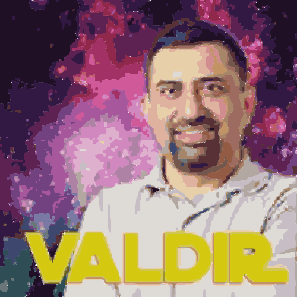

Ouça aqui!
Quem é Valdir?
Valdir é um podcast criado por André Young e seus amigos, onde nele você ouve sobre as desaventuranças deles nos temas mais aleatórios possíveis, como por exemplo: Fezes, ET’s, Rato da AIDS, Folclore brasileiro , Transformers (muitos Transformers) e muito mais!